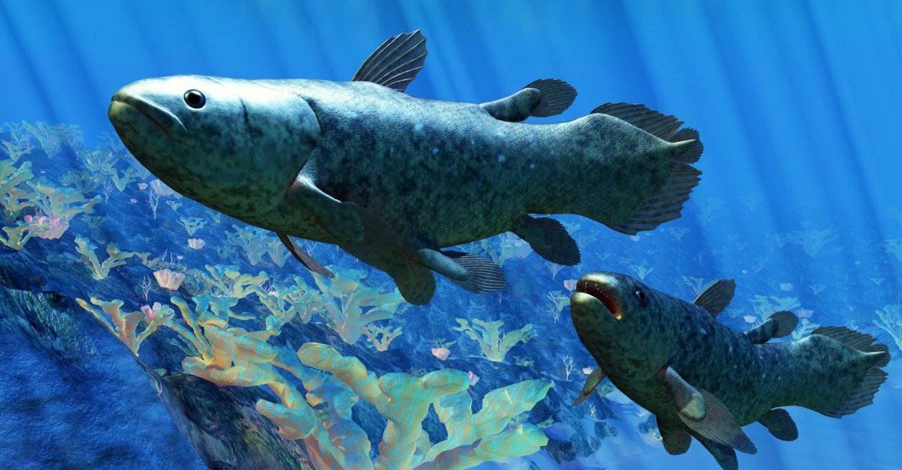
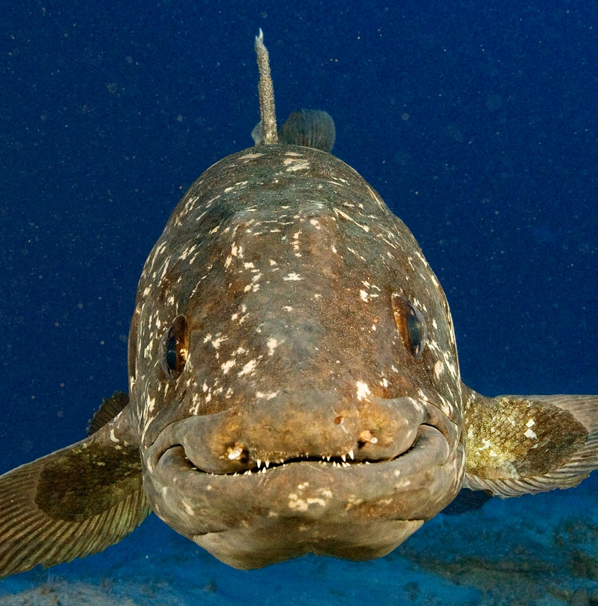
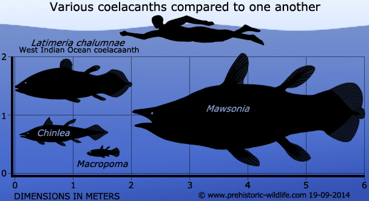
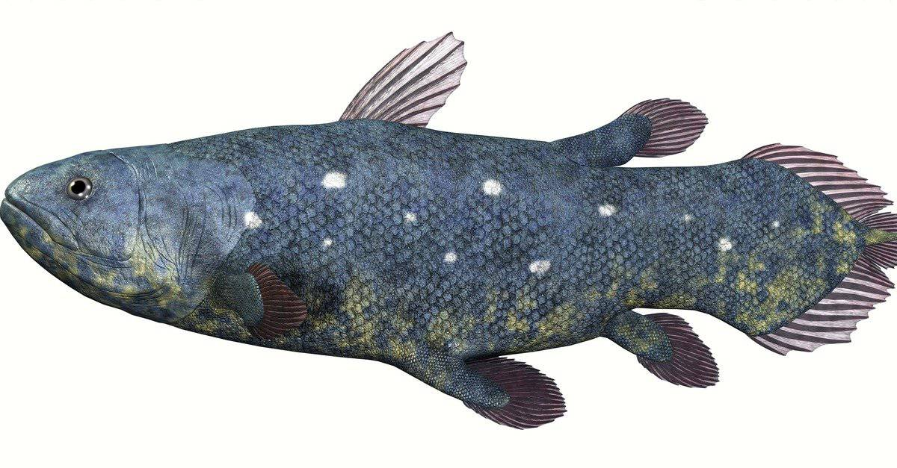
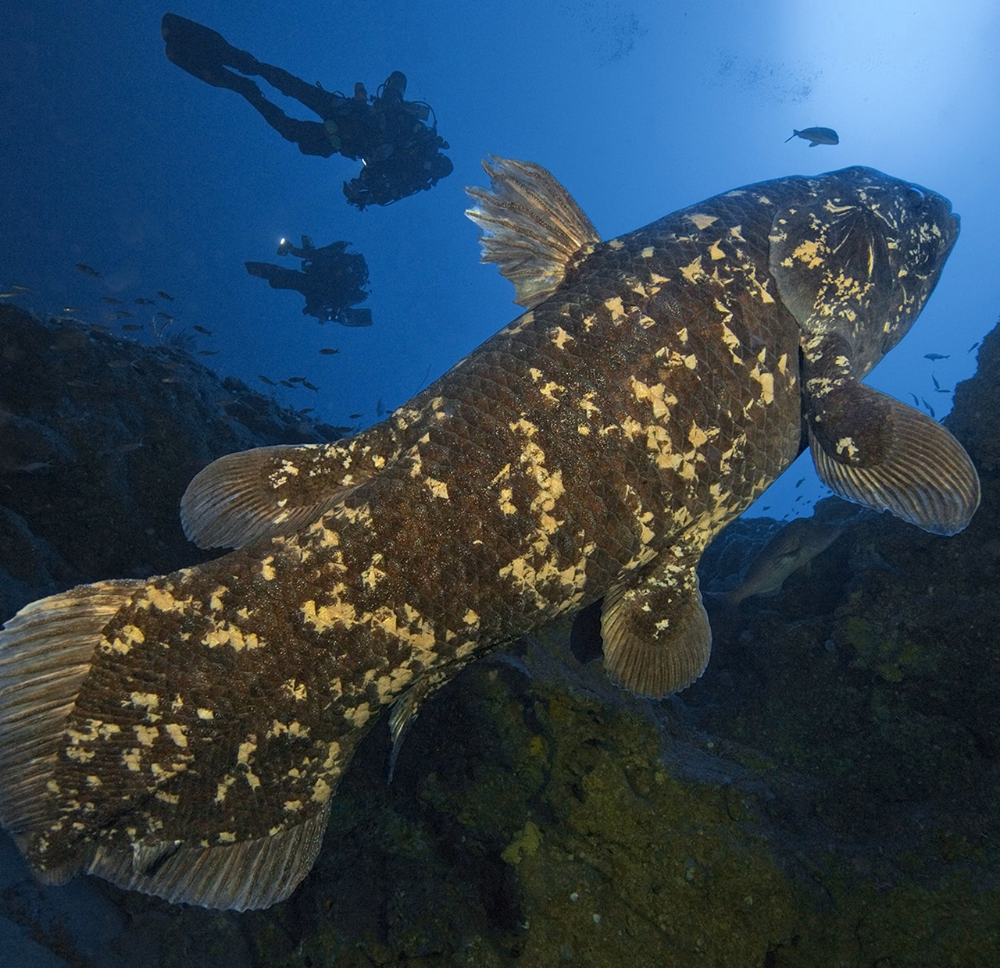
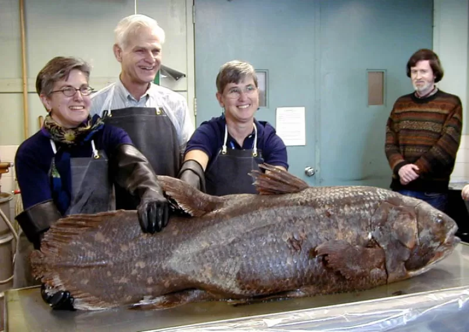

Coelacanth
Cá Vây Tay kỷ Devon
Tổng quan
Kỷ
Devon
Họ
Coelacanthidae
Chi
Coelacanth
Dài
2 m
Nặng
90 kg
Thức ăn


Cá vây tay là một nhóm cá vây thùy cổ xưa trong lớp Actinistia. Với tư cách là sarcopterygians, chúng có quan hệ họ hàng gần với cá phổi và động vật bốn chân hơn là cá vây tia.
Nguồn: wikipedia.org
Phân bố
Khu vực biển Đông Phi, phía Tây Ấn Độ Dương và Đông Nam Á
Thông tin thêm về Coelacanth
Kỷ nguyên và phân bố
Những con cá vây tay đầu tiên xuất hiện trong các mẫu hóa thạch thuộc giai đoạn giữa kỷ Devon, vào khoảng 410 triệu năm trước. Các loài cá vây tay tiền sử sống trong nhiều môi trường nước vào cuối Đại Cổ Sinh và thời kỳ Đại Trung Sinh.
Chúng được cho là đã tuyệt chủng vào cuối kỷ Phấn trắng cho đến tận năm 1938, khi người ta tìm thấy các cá thể còn sống ngoài khơi ven biển phía đông của Nam Phi, ngoài cửa sông Chalumna. Kể từ đó, chúng đã được tìm thấy ở Comoros, Sulawesi (Indonesia), Kenya, Tanzania, Mozambique, Madagascar và Vườn đất ẩm St. Lucia Lớn của Nam Phi.
Tên khoa học
Tên khoa học của toàn bộ bộ cá vây tay (bao gồm cả loài còn sống và loài đã tuyệt chủng) là Coelacanthiformes. Tên cá vây tay dường như bắt nguồn từ một từ tiếng Hy Lạp có nghĩa là xương sống rỗng (là một mô tả rất phù hợp về sinh lý học của nó). Latimeria là tên của chi cho tất cả các loài cá vây tay hiện đang sống. Điều này đã được đưa ra bởi các nhà phân loại học để vinh danh Marjorie Courtenay-Latimer, người được cho là đã phát hiện ra loài cá này vào năm 1938.
Kích thước
Cá vây tay hiện đại là một loài cá khổng lồ có thể dài tới 2 mét và nặng gần 90 kg. Nhưng đây chỉ là một con cá tuế so với một số loài cá vây tay lớn hơn đã tuyệt chủng có kích thước lên tới 6.4 mét.
Ngoại hình
Cá vây tay là một ví dụ về cá vây thùy. Đặc điểm xác định của lớp cá này là sự hiện diện của các vây chia thùy giống như chi. Nhô ra khỏi cơ thể, những chiếc vây này chứa nhiều xương và cơ di chuyển theo kiểu xen kẽ giống như bước chạy nước kiệu của ngựa. Điều này hoàn toàn khác với chuyển động giống như sóng mà nhiều loài cá khác sử dụng. Có ý kiến cho rằng loài cá này thay đổi rất ít so với nguồn gốc tổ tiên của nó do môi trường sống ổn định, thiếu động vật ăn thịt nghiêm trọng hoặc các yếu tố khác thường dẫn đến sự thay đổi lớn về mặt tiến hóa.
Một đặc điểm nổi bật khác của cá vây tay là sự hiện diện của dây sống, một ống rỗng chứa đầy dầu có chức năng như một loại xương sống. Mọi dây sống đơn lẻ trên hành tinh (động vật có vú, bò sát, cá, mực biển, v.v.) đều phát triển một dây sống vào một thời điểm nào đó trong cuộc đời của chúng, nhưng nó hầu như luôn mất đi ở giai đoạn phát triển ban đầu để nhường chỗ cho các đốt sống. Ngược lại, cá vây tay giữ lại dây sống khá đàn hồi trong suốt cuộc đời của nó để thay thế cho các đốt sống mà nó bị thiếu.
Chế độ ăn và săn mồi
Cá vây tay là một loài săn mồi trôi dạt thụ động, chúng di chuyển chậm trong nước và ăn bất cứ con mồi nào tình cờ đi ngang qua. Nó được cho là chiếm vị trí gần đầu chuỗi thức ăn, nhưng do có vết cắn trên một số mẫu vật và phản ứng chiến đấu hoặc bỏ chạy đã phát triển, chưa từng có người trực tiếp quan sát thấy động vật ăn thịt nào ăn cá vây tay, nhưng người ta cho rằng đôi khi cá mập có thể ăn cá vây tay.
Cá vây tay được biết là chủ yếu ăn thịt nhiều loài cá nhỏ hơn, bao gồm cả cá vây tay nhỏ, cá rô phi, cá hồng y và cá đuôi gai bằng đồng. Nó cũng ăn động vật chân đầu như bạch tuộc, mực ống và mực nang.
Khám phá
Chứng cứ đầu tiên mà các nhà khoa học phương Tây có được về các loài cá vây tay hiện đại, còn sống là khi Marjorie Courtenay-Latimer, người phụ trách của viện bảo tàng tại Đông London, Nam Phi, phát hiện ra một mẫu vật trong khi kiểm tra các mẫu cá biển bất thường tại địa phương bắt được năm 1938. Bà đã xem xét mẻ cá của thuyền đánh cá chuyên đánh bắt cá mập gần sông Chalumna và nhìn thấy bộ vây cá màu xanh kỳ dị trong mẻ cá. Bà đã lôi con cá đó ra khỏi đống cá và đưa nó tới viện bảo tàng nhằm tìm xem nó là loại cá nào.
Thất bại trong việc tìm nó trong bất kỳ cuốn sách nào bà có, bà đã cố gắng liên lạc với bạn của mình, giáo sư James Leonard Brierley Smith (1897-1968), nhưng ông đang đi vắng. Không thể bảo quản con cá này, bà đã gửi nó tới người nhồi bông thú. Khi Smith trở về, ông ngay lập tức nhận ra nó là cá vây tay, khi đó chỉ được biết đến từ các mẫu hóa thạch. Loài này được đặt tên khoa học là Latimeria chalumnae để ghi công bà Marjorie Courtenay-Latimer và vùng nước mà nó được tìm thấy. Con cá này được nói đến như là "hóa thạch sống".